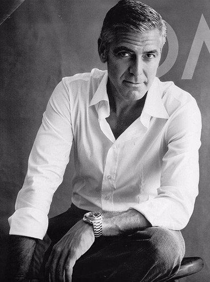
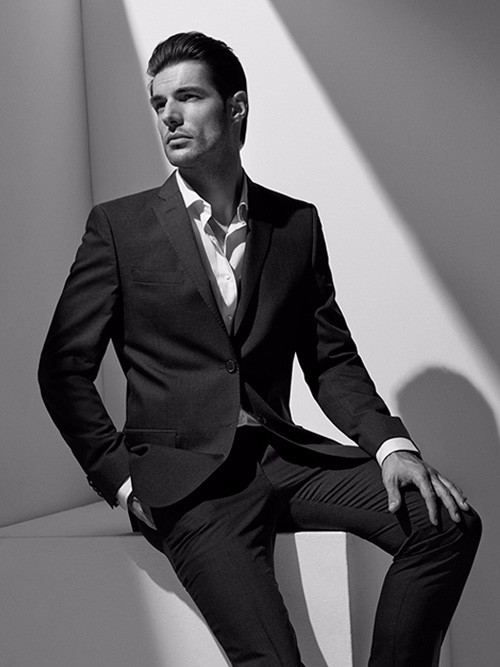

-
公司简介
- 我们是一家集建筑设计、建筑施工、安装、物业管理、劳务输出为一体的建筑工程企业。
具有房屋建筑工程施工总承包、建筑装修装饰工程专业承包、市政公用工程施工总承包、
钢结构工程专业承包、机电安装工程、体育场地施工、劳务作业分包等资质。 - 十多年来，公司以“演绎经典，铸造时尚”的理念为指导；以“客户为源，员工为泉”的精神
为动力；以“建好每项工程，树立企业形象，积极开拓市场，诚信服务社会”为宗旨；以树
立“万圣风范，行业楷模”的信念为目标，孜孜以求，毫不懈怠。企业对每项工程始终以“安
全第一、质量第一、信誉第一”为不变之初衷，回报社会。以演绎经典，铸造时尚为核心，
不断完善自我，精心打造“万圣”品牌，深得同行以及各界人士好评。2006年被《中国质量
万里行》市场调查中心评定为“重质量、讲诚信、树品牌”企业。 -
立足过去，展望未来，面向全国乃至世界；公司将“以人为本”，以真诚的态度，优质的服务，开放的姿态，以科学的发展理念，竭力追求卓越，精心打造建筑行业的“万圣”品牌；万圣人将
努力把企业精神发扬光大，以精诚的合作态度，一流的施工质量，展现万圣的精神风貌，热诚欢迎全国各地以及海外客商合作，共谋发展，开创辉煌美好的未来。
在组织架构设置和人才培养等诸方面，始终围绕着“设计、技术、管理”这三个重要环节，以员工发展为导向，为每位设计师提供一个公正、公平且极富人性化的发展平台。提倡员工的自 我管理，结合公司的知识化管理和培训通道，以及“海阔凭鱼跃，天高任鸟飞”的人才管理理念真正为有理想、有追求、有能力的优秀人才提供一个良好的事业发展平台。近几年来，公 司营业额和人员规模年均50%的大幅增长速度，也不断为员工提供新的发展机会和更广阔的发展天地。

- 我们是一家集建筑设计、建筑施工、安装、物业管理、劳务输出为一体的建筑工程企业。
-
经营团队
- 罗尼索尔斯
- 建筑师艺术名家
-
建筑所体现的不是日常的平凡琐事，而是永恒的、根本的、普遍的问题和人类存在的“价
值”，它所涉及的不是事物实际的状态，而是事物可能的或者应该所具有的状态，呈现的
是理想价值的结构化。真正的建筑给人类提供一种精神燃料，精神因为可能被耗尽而衰
竭。 -
设计的尊严在于驱动自由的勇气，真正紧要的是，为了某种方向触动了人性中的自由禀
性，这种热情和情感让人有着某种冲动去开拓未来的潜在动力，也证明了人类创造自身自
由进步之能力；设计激发了回响，而非达成某种结果，开辟了新的思想探讨的领域，因为
它的陌生感，他为后来的探索者打开了思考的自由度。 -
我是一个嗅觉很灵敏的人，我会在下一个猎物出现的一瞬间，就嗅到它的味道，然后牢牢
地抓住它不撒手，不管它挣扎得有多厉害。我做事很有主心骨，只要是自己想好要做的事
情，一般不受别人的干扰，就是我爸我妈阻止我，我也不会理。我基本上是一个跟着直觉
走的人，幸好，还没有失手过。
-
经营团队
-

- 弗兰克阿布西朗
- 空间处理独具匠心
-
就我自己而言，最不喜欢的是“死板”的空间，就是空间的功能已经被完全限定死了，只能照
着这样用。我想一个可以被创造性使用的空间，才最适合人。所有空间设计之初，就应该
体现出它的“模糊性”，让使用者自己决定它的功能，并且可能一个空间还会出现好多种不同
的功能，设计师要充分表达出空间使用上的自由度。 -
当今是互联网的时代，能消除建筑的阶层性，希望每个人都有自己独立的、受到尊重的空
间。 -
我是一个嗅觉很灵敏的人，我会在下一个猎物出现的一瞬间，就嗅到它的味道，然后牢牢
地抓住它不撒手，不管它挣扎得有多厉害。我做事很有主心骨，只要是自己想好要做的事
情，一般不受别人的干扰，就是我爸我妈阻止我，我也不会理。我基本上是一个跟着直觉
走的人，幸好，还没有失手过。
-
经营团队
-

- 扎哈劳研世
- 他总是太狂妄，太执着于真实
-
城市是一本打开的书，从中可以看到它的抱负。就我自己而言，最不喜欢的是“死板”的空
间，就是空间的功能已经被完全限定死了，只能照着这样用。我想一个可以被创造性使用
的空间，才最适合人。所有空间设计之初，就应该体现出它的“模糊性”，让使用者自己决
定它的功能，并且可能一个空间还会出现好多种不同的功能，设计师要充分表达出空间使
用上的自由度。 -
当今是互联网的时代，能消除建筑的阶层性，希望每个人都有自己独立的、受到尊重的空
间。 -
我是一个嗅觉很灵敏的人，我会在下一个猎物出现的一瞬间，就嗅到它的味道，然后牢牢
地抓住它不撒手，不管它挣扎得有多厉害。我做事很有主心骨，只要是自己想好要做的事
情，一般不受别人的干扰，就是我爸我妈阻止我，我也不会理。我基本上是一个跟着直觉
走的人，幸好，还没有失手过。
-
经营团队
- 尹布艾罗
- 为现代都市增添了光辉
-
就我自己而言，最不喜欢的是“死板”的空间，就是空间的功能已经被完全限定死了，只能
照着这样用。我想一个可以被创造性使用的空间，才最适合人。所有空间设计之初，就应
该体现出它的“模糊性”，让使用者自己决定它的功能，并且可能一个空间还会出现好多种
不同的功能，设计师要充分表达出空间使用上的自由度。 -
当今是互联网的时代，能消除建筑的阶层性，希望每个人都有自己独立的、受到尊重的空
间。 -
我是一个嗅觉很灵敏的人，我会在下一个猎物出现的一瞬间，就嗅到它的味道，然后牢牢
地抓住它不撒手，不管它挣扎得有多厉害。我做事很有主心骨，只要是自己想好要做的事
情，一般不受别人的干扰，就是我爸我妈阻止我，我也不会理。我基本上是一个跟着直觉
走的人，幸好，还没有失手过。
-
微信扫一扫
联系我们噢！！
biubiubiu~~